Biomedical engineer and M.Sc. student building biomedical hardware and medical image analysis projects.
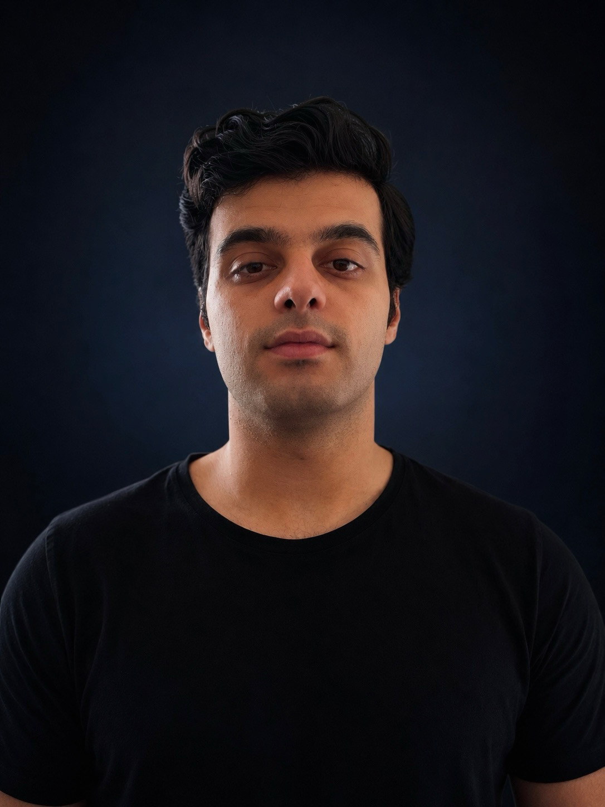
I'm a biomedical engineering graduate studying Medical Systems Engineering at Otto-von-Guericke-Universität Magdeburg. My practical project work includes medical electronics, medical image analysis and machine learning. I am interested in developing my knowledge of medical imaging, particularly MRI technology.
Arabic (native), English (C1), and German (B2.1, moving toward B2.2).
Native fluency across everyday, academic, and professional contexts.
Advanced proficiency — comfortable with technical writing, coursework, and academic communication.
Currently at B2.1, moving toward B2.2.
Independent deep learning projects — most deployed as live Streamlit apps with full write-ups on GitHub.
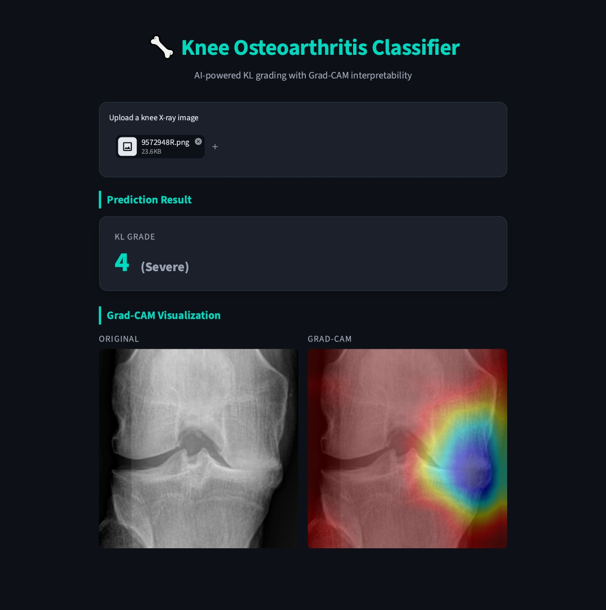
CNN (ResNet) classifier grading knee osteoarthritis severity (KL 0–4) from X-rays, with Grad-CAM interpretability and Conditional DCGAN class balancing.
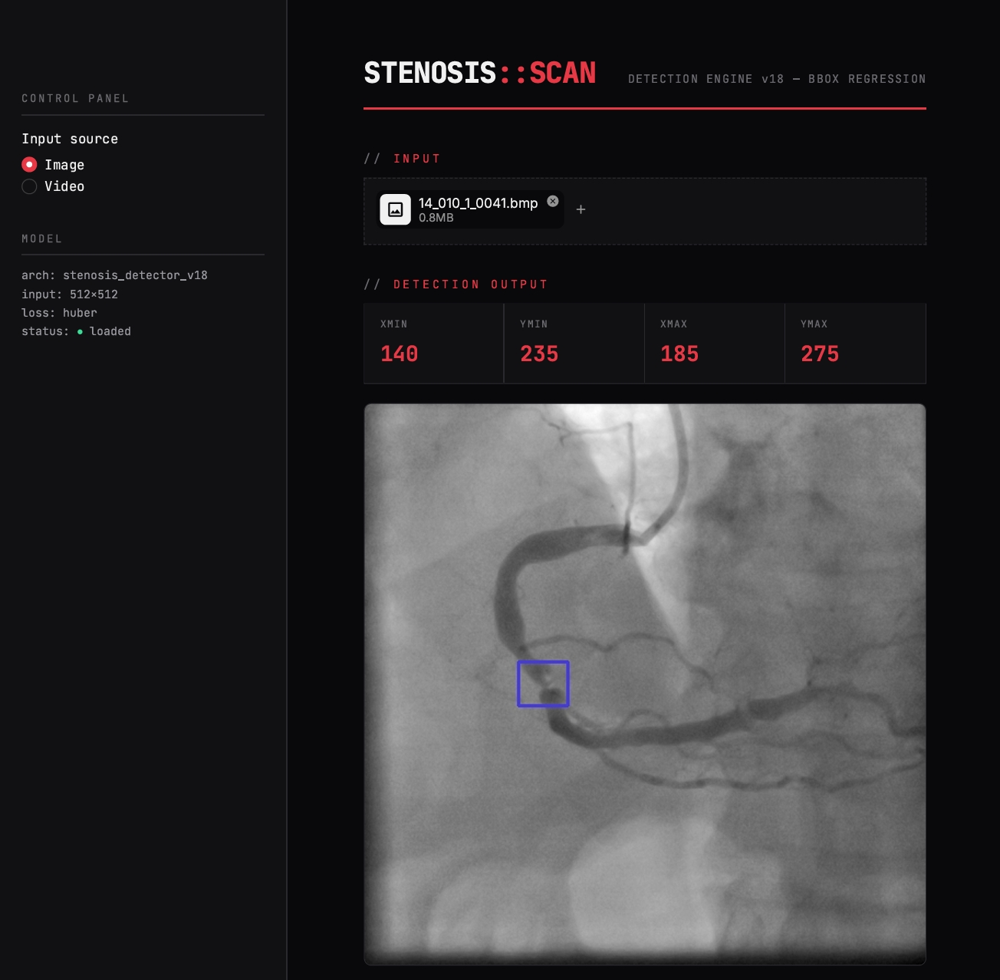
ResNet101V2-based bounding box regression to localize coronary stenosis on ~8,300 angiographic images, evaluated with IoU-based metrics.
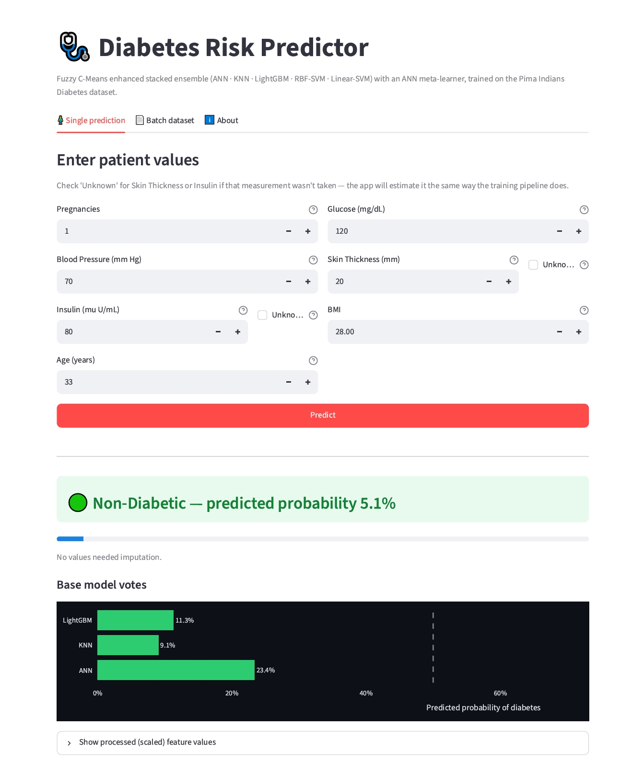
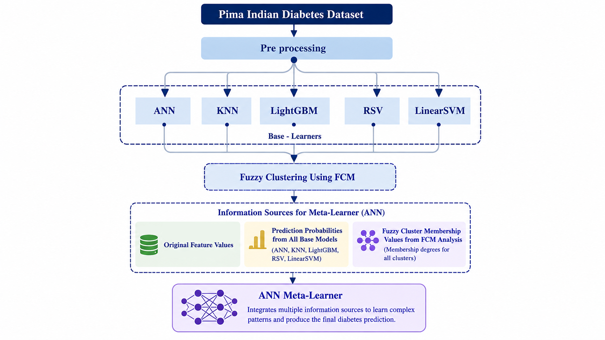
Stacked ensemble (ANN, KNN, LightGBM, RBF-SVM, Linear SVM) with a Fuzzy C-Means enhanced ANN meta-learner, on the Pima Indians dataset.
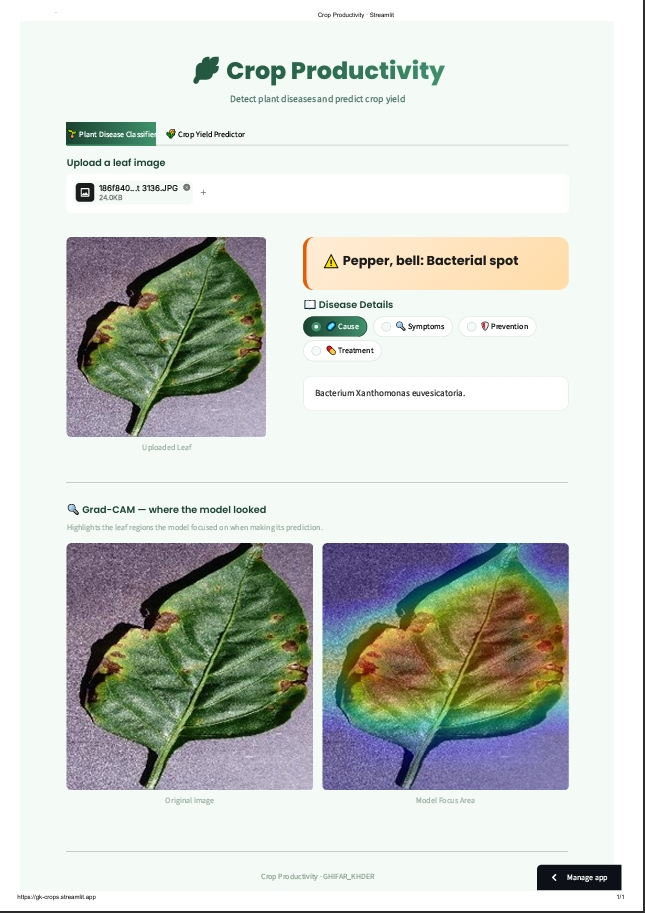
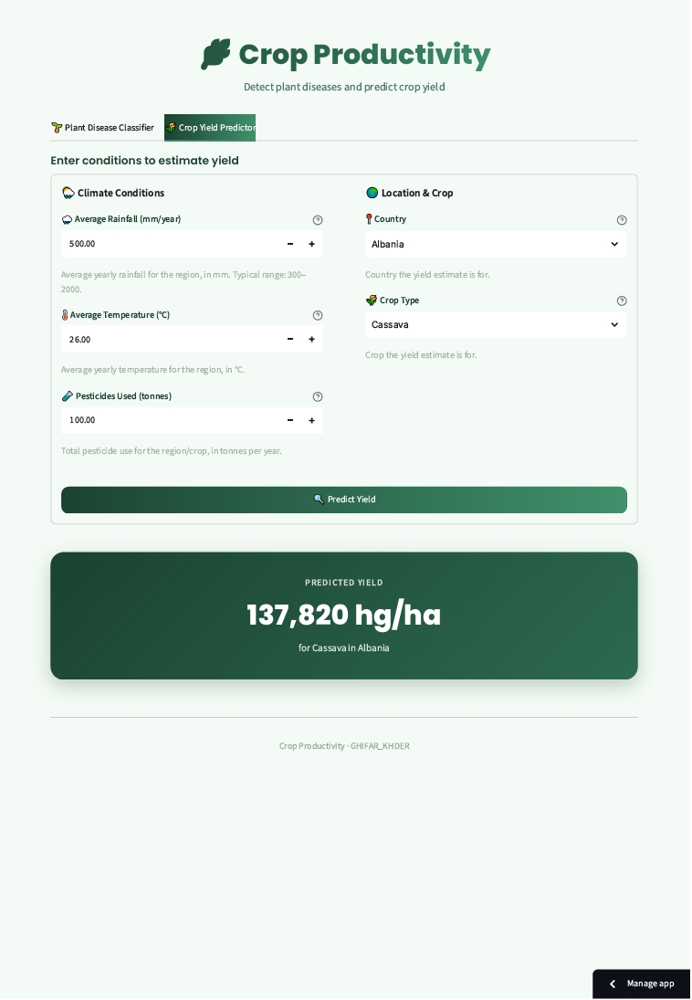
Plant leaf disease diagnosis and crop yield prediction models applying the same imaging/ML pipeline outside the medical domain.
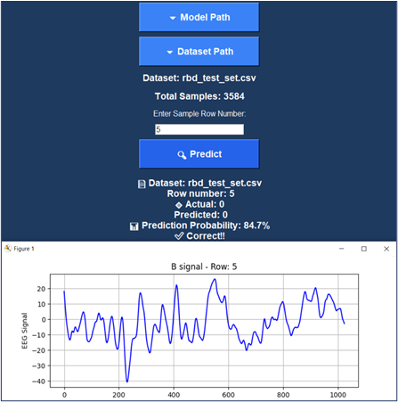
Trained a 1D CNN to classify two-second, single-channel EEG segments into CAP phases A and B. Built an interface to plot signals and compare predictions with reference labels.
Biomedical electronics and embedded systems built as working prototypes.
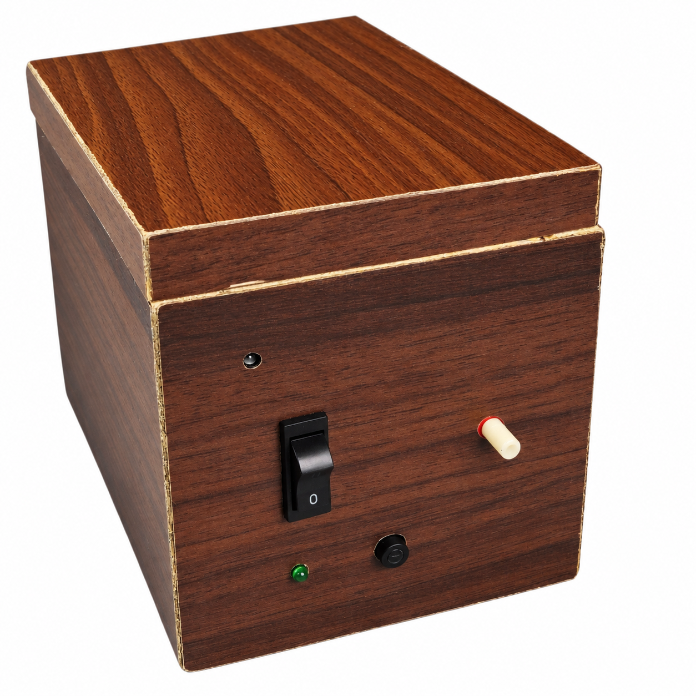
A mechanical-electronic prototype that converts DC-motor rotation into controlled linear compression, with selectable 4, 5 and 6 cm stroke settings and adjustable compression rate. The entire design uses no microcontroller.
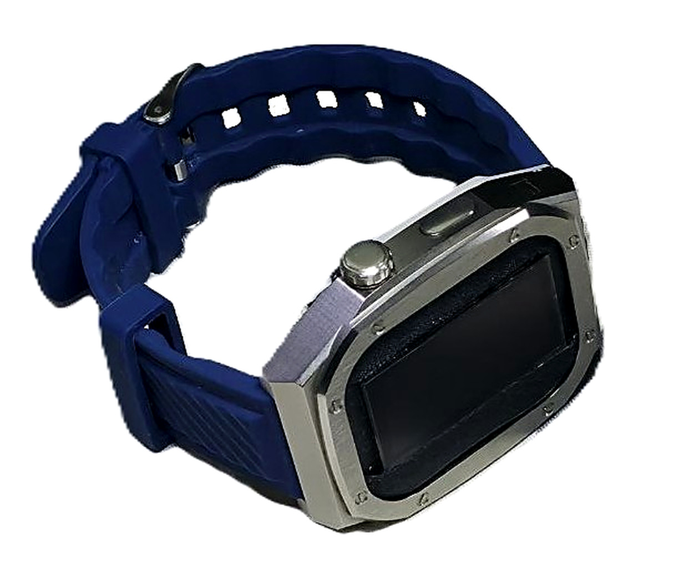
A compact wrist-worn prototype that measures SpO₂ and heart rate, shows the readings on-device, and can stream them over Wi-Fi for browser-based monitoring.
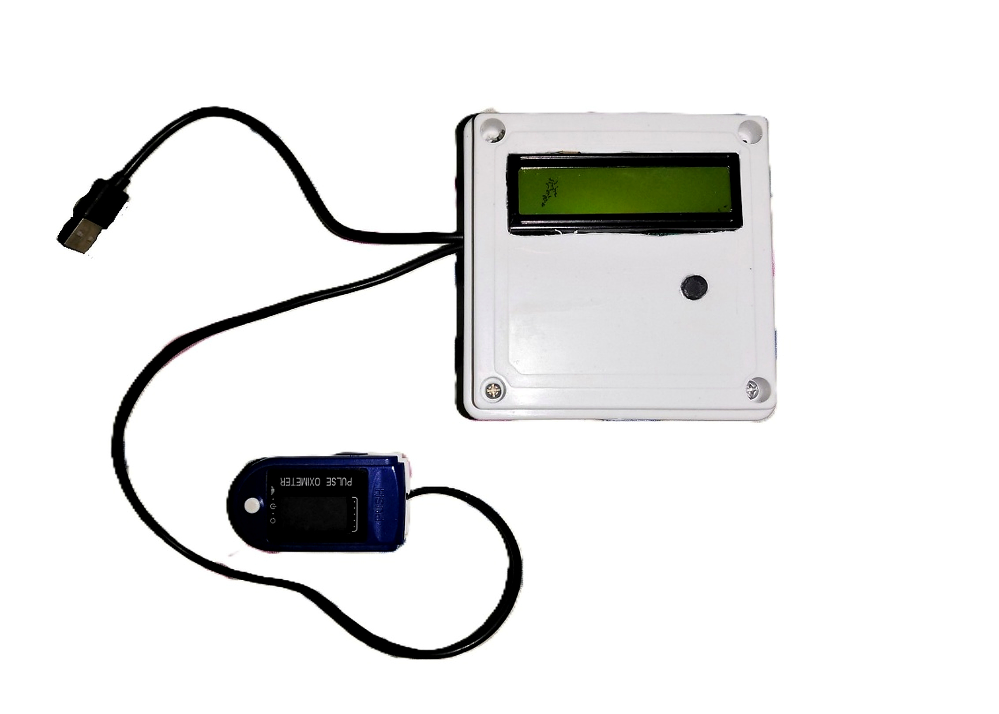
An experimental non-invasive prototype that sends 940 nm infrared light through a finger, conditions the detected optical signal, and maps the measured voltage to an estimated glucose value shown on an LCD.
Open to any learning opportunity.